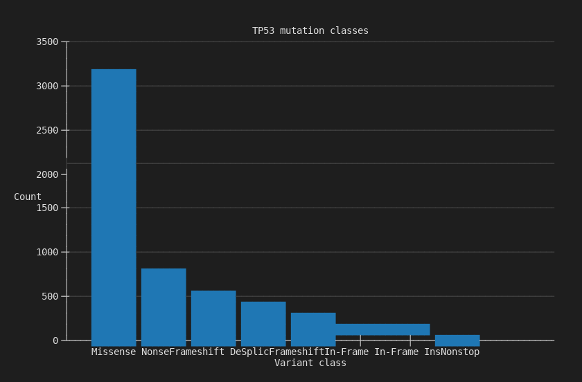
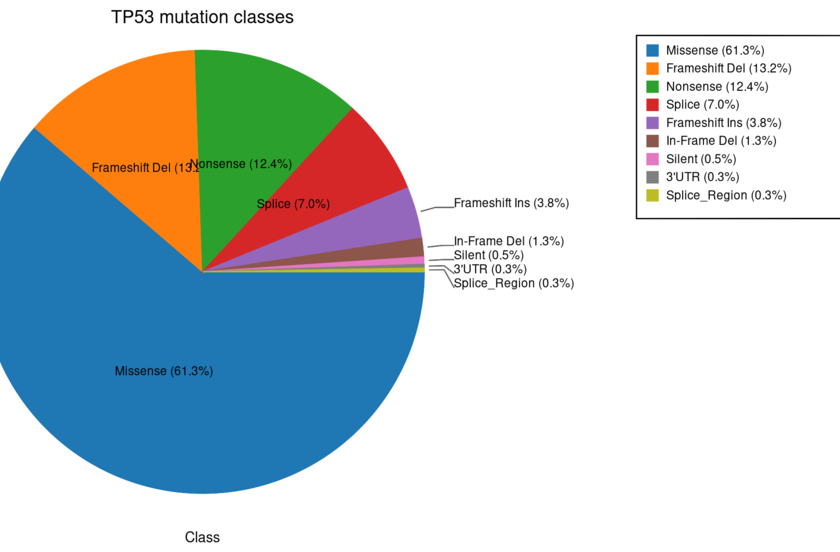
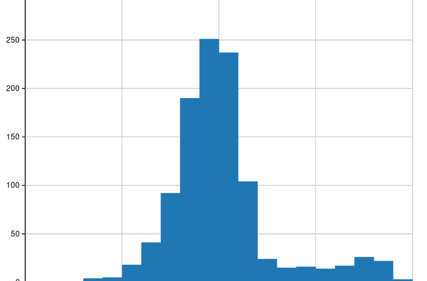
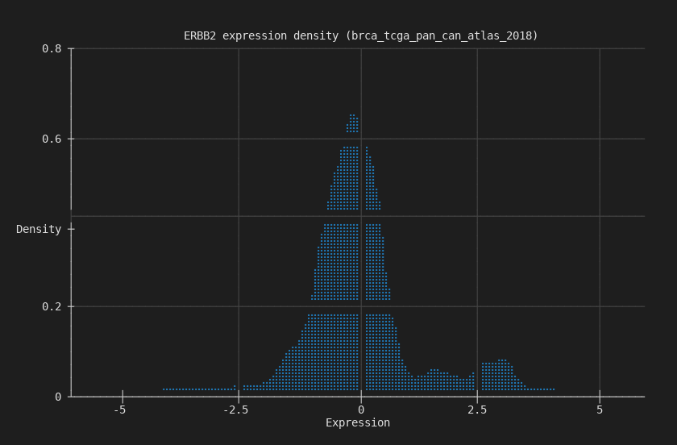
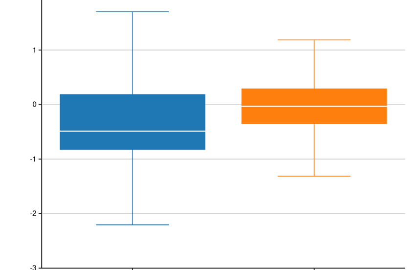
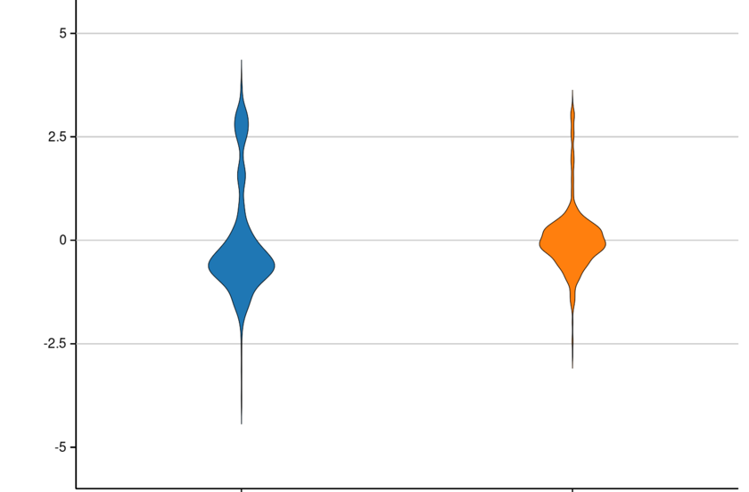
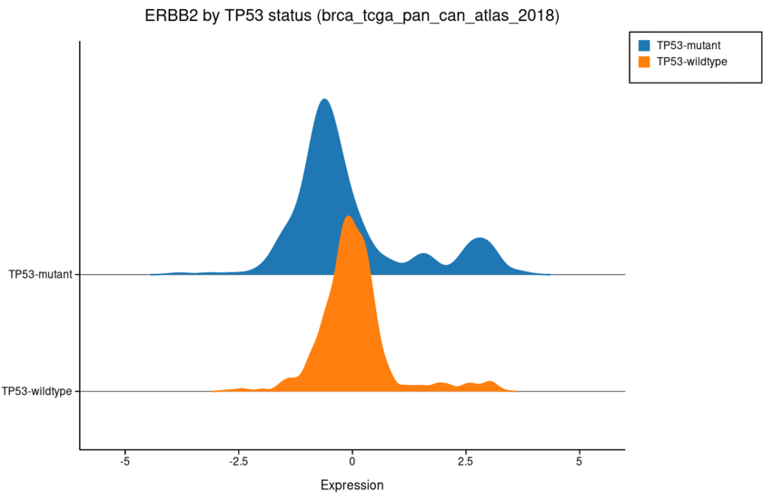
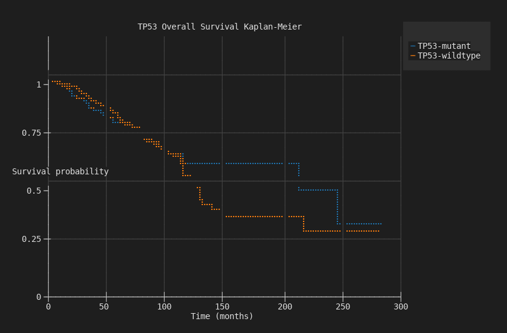
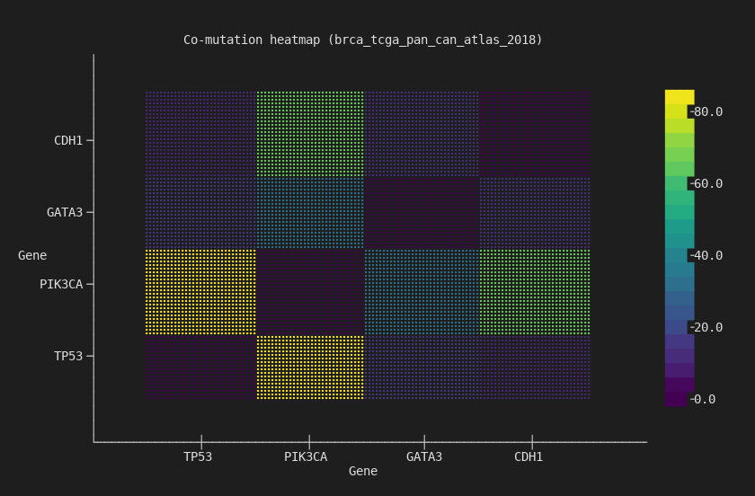
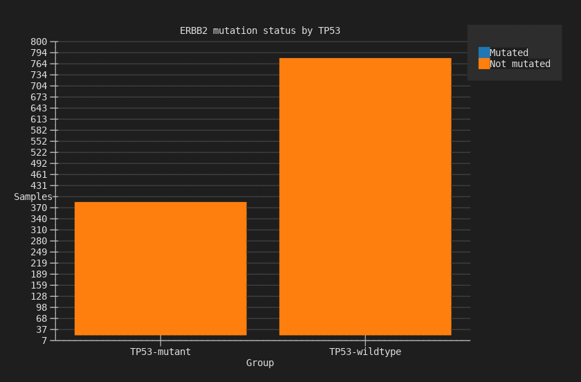

Generate Charts Easily from Study Data¶
You downloaded a cBioPortal study. Now you want to see what's in it — survival differences, mutation patterns, expression distributions, co-mutation relationships. Normally that means opening R, writing ggplot code, managing dependencies, and iterating in a notebook.
BioMCP ships 12 chart types compiled directly into the binary. No Python, no R, no subprocess calls, no package installs. One command produces a chart as a PNG, SVG, or directly in the terminal.
The charting engine is Kuva, an open-source Rust library linked at compile time. It's part of the binary — not a dependency you install.
Chart types¶
Bar¶
Mutation class counts for a single gene. The first thing you run to understand a gene's mutation landscape.

3,157 missense mutations dominate TP53 in MSK-IMPACT, followed by 683 nonsense and 517 frameshift deletions.
Pie¶
Same mutation data as proportions. Useful when the relative share matters more than absolute counts.
$ biomcp study query --study brca_tcga_pan_can_atlas_2018 \
--gene TP53 --type mutations --chart pie -o tp53-pie.png

Missense 61.3%, frameshift deletion 13%, nonsense 12.4%.
Histogram¶
Expression distribution for a single gene. Reveals bimodal patterns, outliers, and subgroups.
$ biomcp study query --study brca_tcga_pan_can_atlas_2018 \
--gene ERBB2 --type expression --chart histogram -o erbb2-histogram.png

The right-hand bump is the HER2-amplified subgroup — roughly 15-20% of breast cancers.
Density¶
Smoothed kernel density estimate of the same expression data. Cleaner view of the distribution shape.
$ biomcp study query --study brca_tcga_pan_can_atlas_2018 \
--gene ERBB2 --type expression --chart density --terminal

Box¶
Expression grouped by mutation status. Whiskers, quartiles, outliers — the standard statistical summary.
$ biomcp study compare --study brca_tcga_pan_can_atlas_2018 \
--gene TP53 --target ERBB2 --type expression \
--chart box -o erbb2-by-tp53-box.png

ERBB2 expression stratified by TP53 mutation status.
Violin¶
Same grouped comparison, but showing the full distribution shape instead of just quartiles.
$ biomcp study compare --study brca_tcga_pan_can_atlas_2018 \
--gene TP53 --target ERBB2 --type expression \
--chart violin -o erbb2-by-tp53-violin.png

The bimodal HER2 pattern is visible in both groups.
Ridgeline¶
Overlapping density curves stacked vertically. Best for comparing two distributions at a glance.
$ biomcp study compare --study brca_tcga_pan_can_atlas_2018 \
--gene TP53 --target ERBB2 --type expression \
--chart ridgeline -o erbb2-by-tp53-ridgeline.png

TP53-mutant (blue) vs wildtype (orange). The wildtype group has a wider right tail.
Survival (Kaplan-Meier)¶
Time-to-event curves split by mutation status. The chart most clinicians look at first.
$ biomcp study survival --study brca_tcga_pan_can_atlas_2018 \
--gene TP53 --chart survival --terminal

TP53-mutant patients have worse overall survival, with curves diverging over 300 months.
Heatmap¶
Co-mutation matrix across multiple genes. Viridis colormap — the most visually striking chart type.
$ biomcp study co-occurrence \
--study brca_tcga_pan_can_atlas_2018 \
--genes TP53,PIK3CA,GATA3,CDH1 \
--chart heatmap --terminal

4x4 co-mutation matrix. TP53/PIK3CA has the strongest off-diagonal signal — the two most commonly co-mutated genes in breast cancer.
Stacked Bar¶
Mutation counts grouped and stacked by mutation status. Shows both the total count and the composition.
$ biomcp study compare --study brca_tcga_pan_can_atlas_2018 \
--gene TP53 --target ERBB2 --type mutations \
--chart stacked-bar --terminal

ERBB2 mutation counts stacked by TP53 status: mutated (blue) vs not-mutated (orange).
Waterfall¶
Sorted values across samples, commonly used for mutation burden or expression ranking.
$ biomcp study query --study brca_tcga_pan_can_atlas_2018 \
--gene ERBB2 --type expression --chart waterfall --terminal
Scatter¶
Two-variable scatter plot for expression comparisons across genes.
$ biomcp study compare --study brca_tcga_pan_can_atlas_2018 \
--gene TP53 --target ERBB2 --type expression \
--chart scatter --terminal
Three formats, one flag¶
Every chart command accepts the same output options:
# Terminal — inline, no files
biomcp study survival ... --chart survival --terminal
# SVG — structured, parseable, lightweight
biomcp study survival ... --chart survival -o survival.svg
# PNG — for presentations and sharing
biomcp study survival ... --chart survival -o survival.png
Themes and palettes¶
Four themes and twelve color palettes, including three designed for colorblind accessibility:
| Themes | Colorblind-accessible palettes |
|---|---|
light, dark, solarized, minimal |
deuteranopia, protanopia, tritanopia |
All 12 palettes: wong, okabe-ito, tol-bright, tol-muted, tol-light, ibm, deuteranopia, protanopia, tritanopia, category10, pastel, bold.
Try it¶
uv tool install biomcp-cli
biomcp study download msk_impact_2017
biomcp study survival --study msk_impact_2017 --gene TP53 \
--chart survival --terminal
biomcp study co-occurrence --study msk_impact_2017 \
--genes TP53,KRAS,PIK3CA,BRAF --chart heatmap --terminal
Download a study, chart it. No setup, no dependencies, no code.